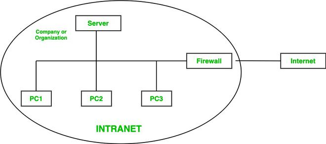

Intranet is a kind of private network. For example, an intranet is used by different organizations and only members/staff of that organization have access to this. It is a system in which multiple PCs of an organization (or the PCs you want to connect) are connected to each other through intranet. As this is a private network, so no one from the outside world can access this network. So many organizations and companies have their own intranet network and only its members and staff have access to this network. This is also used to protect your data and provide data security to a particular organization, as it is a private network and does not leak data to the outside world.
